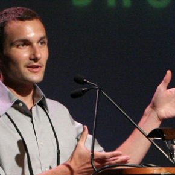
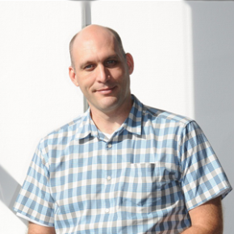

Alex Daskalov Talks Concurrency and Functional Programming
Alex Daskalov enjoys exploring different programming languages and paradigms. These days he spends his time developing educational software. Alex Daskalov – The Case for Lockless Concurrency from CUSEC on Vimeo.
Susan Ibach Introduces Windows Phone Development
Susan Ibach is a Developer Evangelist at Microsoft Canada, that means she loves to talk about Windows Phone, HTML5 and the cloud. An energetic and passionate presenter, there is nothing she enjoys more than sharing her knowledge and passion with others. She worked as a consultant doing programming, testing, data conversions and roll-outs. She also...
Gayle L McDowell Gives Advice and Strategies for Software Engineering Interviews
Gayle Laakmann McDowell is the founder and CEO of CareerCup.com, a site offering thousands of programming interview questions as well as interview videos, resume review, and mock interviews. Gayle’s first book, Cracking the Coding Interview, is the #1 book for preparing for software engineering interviews. Her second book, The Google Resume, is the leading book...
Dr. Wanderley with Joseph Malloch Talk Music
Marcelo Mortensen Wanderley holds a Ph.D. degree from the Université Pierre et Marie Curie (Paris VI), France, on acoustics, signal processing, and computer science applied to music. His main research interests include gestural control of sound synthesis, input device design and evaluation, and...
Alexis Ohanian Talks About Social Activism
After graduating from UVA in 2005, he started reddit.com with Steve Huffman. Founded Breadpig, which creates geeky things, sells them, and gives away all the profits — $190,000 so far. Publisher of xkcd: volume 0. Bottler of AwesomeSauce. Maker of LOLMagnetz. Said WTFCNN?! one too many times. Bassist in a Rock Band™. Ambassador to the...
First Video Posted: Bret Victor
Happy Valentine’s Day! Here’s our gift to you: Bret Victor’s video from CUSEC 2012 Bret Victor – Inventing on Principle from CUSEC on Vimeo.
Speaker Announcement: Bret Victor
Bret Victor invents tools that enable people to understand and create. He has designed experimental UI concepts at Apple, interactive data graphics for Al Gore, and musical instruments at Alesis.

Speaker Announcement: Jeremy Ashkenas
Jeremy Ashkenas is part of the Interactive News team at The New York Times, as well as the lead developer of DocumentCloud, helping news organizations analyze and publish the primary source documents behind the news. He created the CoffeeScript programming language, and works on Backbone.js, Underscore.js, Docco, Jammit, and Ruby-Processing, among other open-source projects.
Speaker Announcement: Alexis Ohanian
After graduating from UVA in 2005, he started reddit.com with Steve Huffman. Founded Breadpig, which creates geeky things, sells them, and gives away all the profits — $190,000 so far. Publisher of xkcd: volume 0. Bottler of AwesomeSauce. Maker of LOLMagnetz. Said WTFCNN?! one too many times. Bassist in a Rock Band™. Ambassador to the...
Speaker Announcement: Manveer Heir
Manveer Heir is a senior designer working at BioWare Montréal on Mass Effect 3. Previously he worked at Raven Software in a variety of roles including gameplay programmer, game designer, and lead designer for multiple games including 2009′s first-person shooter Wolfenstein. Manveer graduated from Virginia Tech in 2004 where he received a Bachelor’s of...

Speaker Announcement: Greg Kroah-Hartman
Greg Kroah-Hartman is an author and Linux kernel developer best known for being a maintainer for the stable branch. He is also a maintainer of the staging branch, serial driver, driver core, kobjects, debugfs, sysfs, TTY layer, USB, USB serial and user space IO. Greg is the author of Linux Device Drivers 3rd Edition and...
Speaker Announcement: Gayle L. McDowell
Right before this past summer, there were a couple of weeks where I was interviewing with several companies. Every week, I would have at least one technical phone interview or in-person interview. I remember how nerve-racking and stressful it was and hoping that my thoughts and ideas didn’t sound garbled to the interviewer. The first...